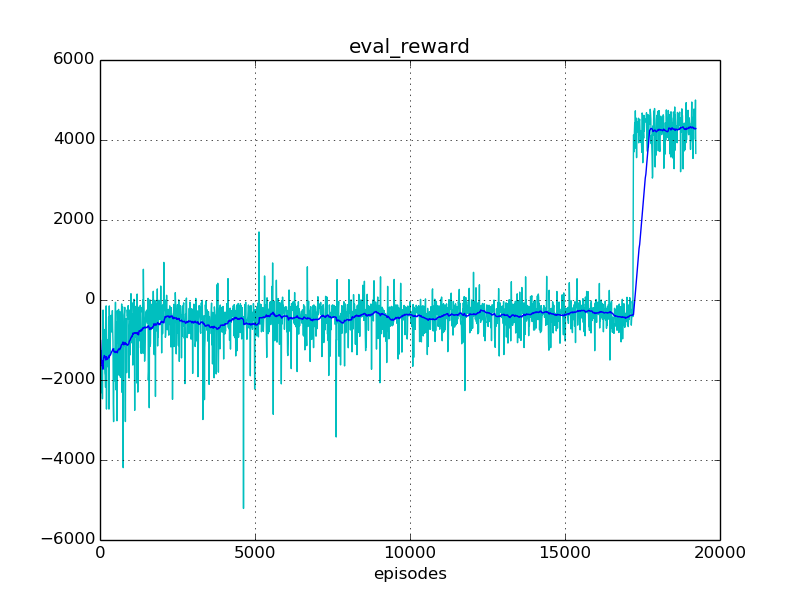
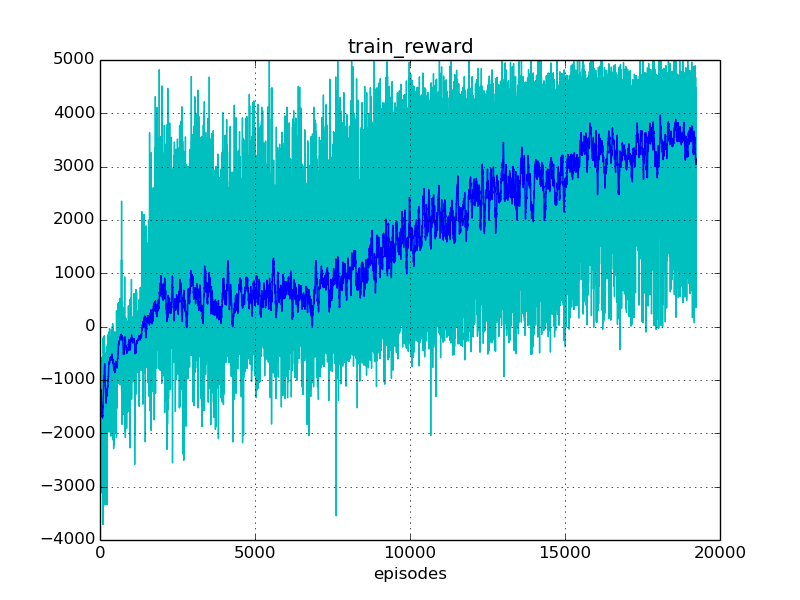
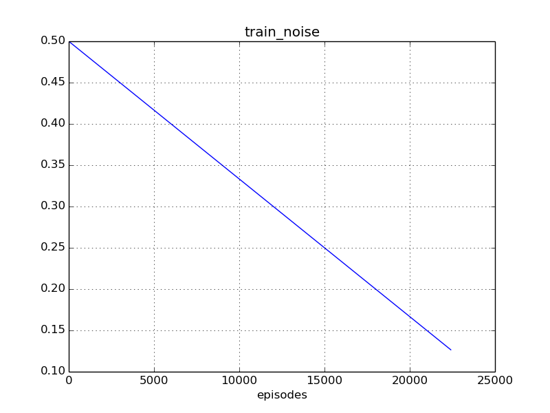
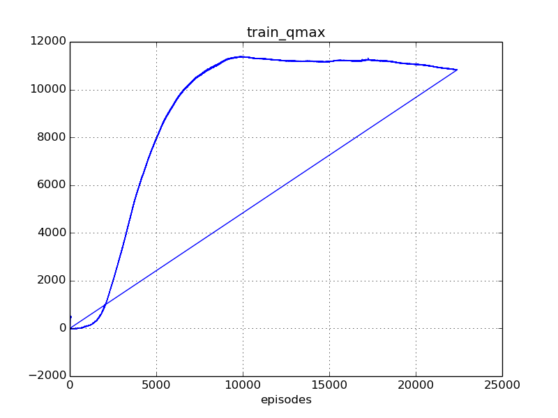

Experiment #003
Reward: 3455
Qmax: 478
Left: 02:46:16 (75%)
Report time: 2017-01-22 20:21:43
Host name: bernard
Configuration
Experiment:
exp.base_path: experiments/
exp.episodes: 30000
exp.id: 003
exp.logger_class: core.logger.Logger
exp.mind_class: tf.mind.TensorflowMind
exp.platform_class: tf.platform.TensorflowPlatform
exp.save_every_episodes: 200
exp.steps: 50
exp.world_class: zoo.scorpion.world.ScorpionWorld
Algorithm:
alg.batch_size: 128
alg.buffer_size: 100000
alg.noise_rate_method: linear_05_00
alg.noise_sigma: 0.1
alg.noise_theta: 0.01
Mind:
mind.evaluate_every_episodes: 10
Environment:
env.assets: ./assets/
env.episode_jpos_method: jpos_do_nothing
env.frame_skip: 2
env.id: Zoo:Mujoco:Scorpion-v1
env.init_every_episods: 30
env.reward_method: tentacle_reward
env.step_jpos_method: jpos_do_nothing
env.target_range_xz: [[-0.7, 0.7], [0.5, 1.0]]
env.world.agents: ['scorpion', 'ball']
env.world.scorpion.agents: ['tentacle', 'target']
env.world.scorpion.algorithm:
env.world.scorpion.class: zoo.scorpion.scorpion.ScorpionAgent
env.world.scorpion.inputs: ['ball_x', 'ball_y', 'ball_z']
env.world.scorpion.tentacle.algorithm:
env.world.scorpion.tentacle.inputs: ['target_x', 'target_z']
Reporting:
report.diagram_mean_frame: 50
report.refresh_html_every_secs: 90
report.summary_every_episodes: 30
report.write_every_episodes: 30
Instances
Experiment:
id: 003
work_path: experiments/003
platform: TensorflowPlatform
world: ScorpionWorld:
env_id: Zoo:Mujoco:Scorpion-v1
model_path: ./assets/world.xml
total_act_dim: 6
env: ScorpionEnv:
model_path: /home/roman-ml/prj/rmus/zoo/zoo/scorpion/experiments/003/environment/env_model.xml
sensors:
world.scorpion.sensor_head_pos [1]
world.scorpion.sensor_head_vel [1]
world.scorpion.tentacle.sensor_s1_pos [1]
world.scorpion.tentacle.sensor_s1_vel [1]
world.scorpion.tentacle.sensor_s2_pos [1]
world.scorpion.tentacle.sensor_s2_vel [1]
world.scorpion.tentacle.sensor_s3_pos [1]
world.scorpion.tentacle.sensor_s3_vel [1]
world.scorpion.target.sensor_x [1]
world.scorpion.target.sensor_z [1]
world.ball.sensor_x [1]
world.ball.sensor_y [1]
world.ball.sensor_z [1]
world.ball.sensor_vx [1]
world.ball.sensor_vy [1]
world.ball.sensor_vz [1]
world.ball.sensor_accelerometer [3]
actuators:
world.scorpion.actuator_head [-10 +10]
world.scorpion.actuator_target_x [-2 +2]
world.scorpion.actuator_target_z [-1 +2]
world.scorpion.tentacle.actuator_s1 [-2000 +2000]
world.scorpion.tentacle.actuator_s2 [-1500 +1500]
world.scorpion.tentacle.actuator_s3 [-500 +500]
sensors:
no
actuators:
no
observations:
sensor: world.scorpion.sensor_head_pos=[-2.09]
sensor: world.scorpion.sensor_head_vel=[-0.00034]
inputs: world.scorpion.inputs_ball_x=[+18.1]
inputs: world.scorpion.inputs_ball_y=[-10]
inputs: world.scorpion.inputs_ball_z=[-4.8]
sensor: world.scorpion.tentacle.sensor_s1_pos=[+1.05]
sensor: world.scorpion.tentacle.sensor_s1_vel=[+2.57]
sensor: world.scorpion.tentacle.sensor_s2_pos=[-2.13]
sensor: world.scorpion.tentacle.sensor_s2_vel=[-0.097]
sensor: world.scorpion.tentacle.sensor_s3_pos=[+0.215]
sensor: world.scorpion.tentacle.sensor_s3_vel=[-0.122]
inputs: world.scorpion.tentacle.inputs_target_x=[-0.222]
inputs: world.scorpion.tentacle.inputs_target_z=[-0.249]
sensor: world.scorpion.target.sensor_x=[-0.222]
sensor: world.scorpion.target.sensor_z=[-0.249]
sensor: world.ball.sensor_x=[+18.1]
sensor: world.ball.sensor_y=[-10]
sensor: world.ball.sensor_z=[-4.8]
sensor: world.ball.sensor_vx=[+2.04]
sensor: world.ball.sensor_vy=[-2.02]
sensor: world.ball.sensor_vz=[-0.0248]
sensor: world.ball.sensor_accelerometer=[-0.341,+0.337,+0.00413]
mind: TensorflowMind:
saved_episode: None
algorithm: DummyAlgorithm:
scope: DummyAlgorithm_world
obs_dim: 24
act_dim: 0
agents:
world.scorpion: ScorpionAgent >>>> training <<<<:
model_path: ./assets/scorpion.xml
alg_obs: [-2.09,-0.00034,+18.1,-10,-4.8,+1.05,+2.57,-2.13,-0.097,+0.215,-0.122,-0.222,-0.249,-0.222,-0.249]
alg_obs_dim: 15
alg_act_dim: 3
sensors:
world.scorpion.sensor_head_pos [1]
world.scorpion.sensor_head_vel [1]
actuators:
world.scorpion.actuator_head [-10 +10]
world.scorpion.actuator_target_x [-2 +2]
world.scorpion.actuator_target_z [-1 +2]
observations:
sensor: world.scorpion.sensor_head_pos=[-2.09]
sensor: world.scorpion.sensor_head_vel=[-0.00034]
inputs: world.scorpion.inputs_ball_x=[+18.1]
inputs: world.scorpion.inputs_ball_y=[-10]
inputs: world.scorpion.inputs_ball_z=[-4.8]
sensor: world.scorpion.tentacle.sensor_s1_pos=[+1.05]
sensor: world.scorpion.tentacle.sensor_s1_vel=[+2.57]
sensor: world.scorpion.tentacle.sensor_s2_pos=[-2.13]
sensor: world.scorpion.tentacle.sensor_s2_vel=[-0.097]
sensor: world.scorpion.tentacle.sensor_s3_pos=[+0.215]
sensor: world.scorpion.tentacle.sensor_s3_vel=[-0.122]
inputs: world.scorpion.tentacle.inputs_target_x=[-0.222]
inputs: world.scorpion.tentacle.inputs_target_z=[-0.249]
sensor: world.scorpion.target.sensor_x=[-0.222]
sensor: world.scorpion.target.sensor_z=[-0.249]
mind: TensorflowMind:
saved_episode: None
algorithm: DDPG_PeterKovacs
scope: DDPG_PeterKovacs_world_scorpion
obs_dim: 15
act_dim: 3
buffer: ReplayBuffer:
buffer_size: 100000
num_experiences: 4500
episode: 89
agents:
world.scorpion.tentacle: MujocoAgent:
model_path: ./assets/tentacle.xml
alg_obs: [+1.05,+2.57,-2.13,-0.097,+0.215,-0.122,-0.222,-0.249]
alg_obs_dim: 8
alg_act_dim: 3
sensors:
world.scorpion.tentacle.sensor_s1_pos [1]
world.scorpion.tentacle.sensor_s1_vel [1]
world.scorpion.tentacle.sensor_s2_pos [1]
world.scorpion.tentacle.sensor_s2_vel [1]
world.scorpion.tentacle.sensor_s3_pos [1]
world.scorpion.tentacle.sensor_s3_vel [1]
actuators:
world.scorpion.tentacle.actuator_s1 [-2000 +2000]
world.scorpion.tentacle.actuator_s2 [-1500 +1500]
world.scorpion.tentacle.actuator_s3 [-500 +500]
observations:
sensor: world.scorpion.tentacle.sensor_s1_pos=[+1.05]
sensor: world.scorpion.tentacle.sensor_s1_vel=[+2.57]
sensor: world.scorpion.tentacle.sensor_s2_pos=[-2.13]
sensor: world.scorpion.tentacle.sensor_s2_vel=[-0.097]
sensor: world.scorpion.tentacle.sensor_s3_pos=[+0.215]
sensor: world.scorpion.tentacle.sensor_s3_vel=[-0.122]
inputs: world.scorpion.tentacle.inputs_target_x=[-0.222]
inputs: world.scorpion.tentacle.inputs_target_z=[-0.249]
mind: TensorflowMind:
saved_episode: 22399
algorithm: DDPG_PeterKovacs
scope: DDPG_PeterKovacs_world_scorpion_tentacle
obs_dim: 8
act_dim: 3
buffer: ReplayBuffer:
buffer_size: 100000
num_experiences: 100000
episode: 22399
agents:
no
world.scorpion.target: MujocoAgent:
model_path: ./assets/target.xml
alg_obs: [-0.222,-0.249]
alg_obs_dim: 2
alg_act_dim: 0
sensors:
world.scorpion.target.sensor_x [1]
world.scorpion.target.sensor_z [1]
actuators:
no
observations:
sensor: world.scorpion.target.sensor_x=[-0.222]
sensor: world.scorpion.target.sensor_z=[-0.249]
mind: TensorflowMind:
saved_episode: None
algorithm: DummyAlgorithm:
scope: DummyAlgorithm_world_scorpion_target
obs_dim: 2
act_dim: 0
agents:
no
world.ball: MujocoAgent:
model_path: ./assets/ball.xml
alg_obs: [+18.1,-10,-4.8,+2.04,-2.02,-0.0248,-0.341,+0.337,+0.00413]
alg_obs_dim: 9
alg_act_dim: 0
sensors:
world.ball.sensor_x [1]
world.ball.sensor_y [1]
world.ball.sensor_z [1]
world.ball.sensor_vx [1]
world.ball.sensor_vy [1]
world.ball.sensor_vz [1]
world.ball.sensor_accelerometer [3]
actuators:
no
observations:
sensor: world.ball.sensor_x=[+18.1]
sensor: world.ball.sensor_y=[-10]
sensor: world.ball.sensor_z=[-4.8]
sensor: world.ball.sensor_vx=[+2.04]
sensor: world.ball.sensor_vy=[-2.02]
sensor: world.ball.sensor_vz=[-0.0248]
sensor: world.ball.sensor_accelerometer=[-0.341,+0.337,+0.00413]
mind: TensorflowMind:
saved_episode: None
algorithm: DummyAlgorithm:
scope: DummyAlgorithm_world_ball
obs_dim: 9
act_dim: 0
agents:
no
logger: Logger:
saved_time: 08:15:59
train_history: 22490
eval_history: 2241
reporter: Reporter:
html_path: /home/roman-ml/prj/rmus/zoo/zoo/scorpion/experiments/003/reporter/report.html
Progress
Episodes: 22490
Steps: 1124500
Total time: 11:04:13
spent: 08:17:57 (74%)
left: 02:46:16
Finish: 23:07:59 2017-01-22
Performance: 0.75 per sec
Results
Train reward: +376.26
Eval reward: +3454.74
Diagrams



